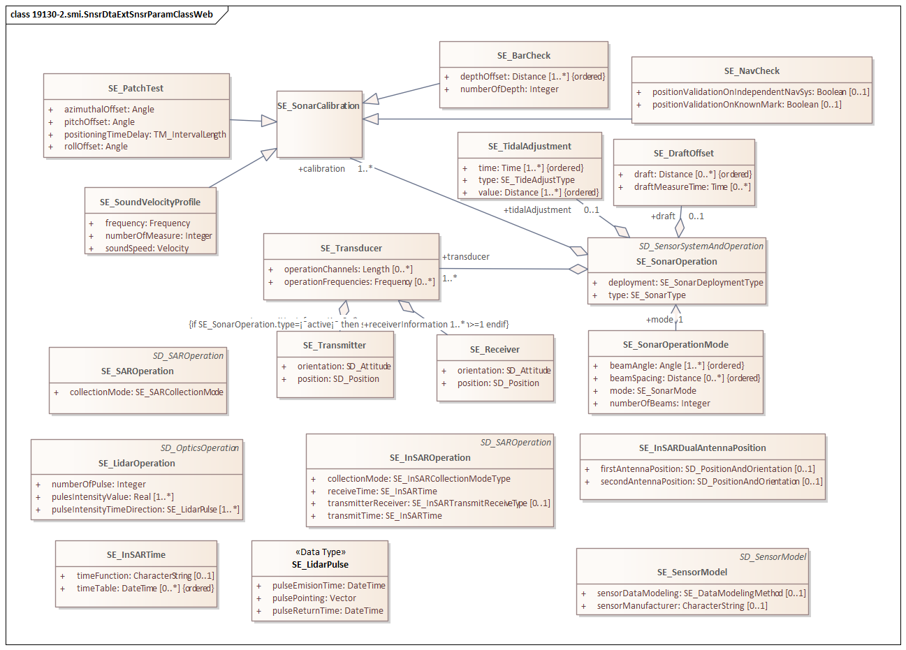
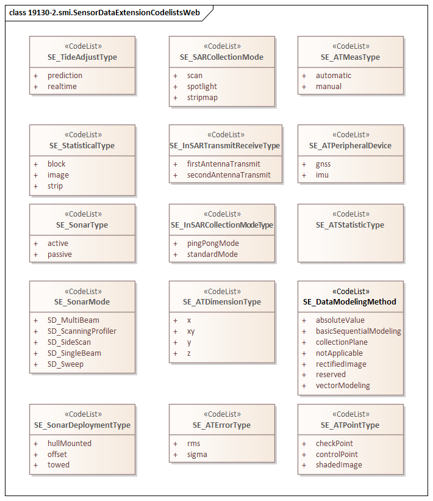

The XML schema was encoded using the rules described in ISO 19108 and ISO/TS 19139:2007.
SMI 1.1 is an XML Schema implementation derived from:
The namespace URI for smi 1.1 is https://schemas.isotc211.org/19130/-3/smi/1.1.
https://schemas.isotc211.org/19130/-3/smi/1.1.0/smi.xsd is the XML Schema document to be referenced by XML documents containing XML elements in the smi 1.1 namespace or by XML Schema documents importing the smi 1.1 namespace. This XML schema includes (indirectly) all the implemented concepts of the smi namespace, but it does not contain the declaration of any types.
https://schemas.isotc211.org/19130/-2/smi/1.1.0/sensorModel.xsd implements the UML conceptual schema defined in ISO 19130-2, Geographic Information - Imagery Sensor Models for Geopositioning - Part 2: SAR, INSAR, lidar and sonar. It was created using the encoding rules defined in ISO 19118, ISO 19139.
https://schemas.isotc211.org/19130/-2/smi/1.1.0/sensorParameters.xsd implements the UML conceptual schema defined in ISO 19130-2, Geographic Information - Imagery Sensor Models for Geopositioning - Part 2: SAR, INSAR, lidar and sonar. It was created using the encoding rules defined in ISO 19118, ISO 19139.
https://schemas.isotc211.org/19130/-2/smi/1.1.0/spatialElements.xsd implements the UML conceptual schema defined in ISO 19130-2, Geographic Information - Imagery Sensor Models for Geopositioning - Part 2: SAR, INSAR, lidar and sonar. It was created using the encoding rules defined in ISO 19118, ISO 19139.

https://schemas.isotc211.org/19130/-2/smi/1.1.0/codeList.xsd implements the codelists from the UML conceptual schema defined in ISO 19130-2, Geographic Information - Imagery Sensor Models for Geopositioning - Part 1: SAR, INSAR, lidar and sonar. It was created using the encoding rules defined in ISO 19118, ISO 19139.
| Name | Standard Prefix | Namespace Location | Schema Location |
|---|---|---|---|
| Geographic Common Objects | gco | https://schemas.isotc211.org/19103/-/gco/1.2 | ../../../../19103/-/gco/1.2.0/gco.xsd |
| Metadata for Data Quality | mdq | https://schemas.isotc211.org/19157/-/mdq/1.2 | ../../../../19157/-/mdq/1.2.0/mdq.xsd |
| Geospatial Meta-Language | gml | http://schemas.opengis.net/gml/3.2 | http://schemas.opengis.net/gml/3.2.1/gml.xsd |
| Sensor Web Enabled | swe | http://www.opengis.net/swe/2.0 | http://schemas.opengis.net/sweCommon/2.0/swe.xsd |
Written by hand. Version: 2021-02-15